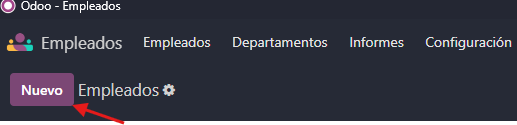

Módulo de Inventario
En el modúlo de inventario, lo que se tocará es el como crear, actualizar y editar productos.
Módulo de Empleados
En este módulo se aprende a como crear un empleado, departamentos, puesto de trabajo, gerente y mentor.
Como crear un empleado, departamentos, puesto de trabajo, gerente y mentor.
Primero nos iremos en la sección de modulos a " Empleados ", rodeado de rojo

Una vez hayamos entrado en el módulo, nos iremos al botón en morado Nuevo empleado. A continuación, muestro donde hay que darle:
Cuando le hayamos dado Nuevo Empleado , se nos desplegará el siguiente panel, en el explicaré que hace cada campo.

- 1: En este punto, podemos en nombre del nuevo empleado.
- 2: Aquí, pondremos la foto del empleado.
- 3: En el campo de correo electrónico de trabajo pondremos el correo del nuevo empleado.
- 4: En el campo Departamento, pondremos a que departamento queremos que pertenezca nuestro nuevo empleado. En caso de no tener ningún departamento,
se puede crear dandole a Nuevo. - 5: Aquí pondremos que cargo queremos que tenga ese nuevo empleado. Todo depende del rol que le queramos dar, puede ser lo que queramos gerente, empleado, etc...
- 6: En este campo (Gerente), podemos asignarle un "jefe" al empleado en caso de que lo tenga o no, todo depende del cargo que le demos al nuevo empleado.
- 7: En este campo (Mentor), pondremos quien le ha enseñado
Aquí, por ejemplo, tenemos a una empleada que he creado. Se llama Matilde, pertenece al departamento de Marketing, su puesto de trabajo es empleada, su "jefa" es Marina Ribers y su mentora Lola Lolita
En VapperShop, tenemos a nuestro cargo 11 empleados , distribuidos en diferentes departamentos. Que mostraré a continuación.
Estos son los diferentes departamentos que tenemos en nuestra empresa, distribuidos en Marketing, Administración, Ventas, Recursos Humanos e Informática
También podemos ver el Organigrama (El Organigrama de una empresa es para ver el como estan estructurados los empleados en la empresa). En nuestra empresa es el siguiente:
| Empleados a cargo de Alberto (Director de la Empresa) |
| Empleados a cargo de Cristan (Director de la Empresa) |
Módulo de Compra
En este módulo, lo que heremos será el como crear un proveedor, el como crear un pedido y los diferentes pedidos que podemos tener.
Como crear un proveedor y diferentes tipos de pedidos
Para crear un proveedor o un pedido, nos iremos al módulo de Compras, como indico a continuación:

Como crear un proveedor
Para crear un proveedor, nos iremos dentro del módulo de Compra a Pedidosy dentro de él a Proveedores y le damos, como indico a continuación:
Una vez le hayamos dado / clickado, se nos desplegará la siguiente pestaña:
(En mi caso hay proveedores ya porque los he creados antes)
Si se nos ha abierto el panel de la foto de arriba entonces lo hemos hecho bien.
Para crear un nuevo proveedor, le daremos a Nuevo como indico a continuación:
Una vez le hayamos dado a nuevo. Se nos abrirá el siguiente panel para crear un nuevo proveedor, a continuación explico que hace cada campo.
- 1: En este punto, podemos en nombre del nuevo proveedor.
- 2: Aquí, pondremos la foto del proveedor.
- 3: En el campo de Contacto rellenaremos en donde se encuentra la empresa o el proveedor ubicado.
- 4: En el campo Puesto de Trabajo, pondremos que cargo tiene la persona con la que vamos a contactar.
- 5: Aquí pondremos el teléfono con quien vamos a contactar.
- 6: En este campo Individuo o Compañia, elegiremos una opción u otra dependiendo si es alguien por cuenta ajena o una empresa .
- 7: En este campo Correo electrónico, pondremos el correo de la empresa o individuo que tiene
- 8: En este campo Sitio Web, pondremos si tiene una página web o no
- 9: En este campo Nombre de la Empresa, pondremos el nombre de la empresa en caso de tengamos a "x" persona de esa empresa como contacto.
Y con esto ya tendriamos un proveedor creado, por ejemplo, yo he creado un proveedor de Mercado Libre
Y aquí muestro 5 proveedores creados:
Como crear un pedido
Para crear un pedido, haremos lo siguiente, explicado con un video.
Para crear un pedido, nos iremos dentro del módulo de Compra a Pedidosy dentro de él a Solicitud de Pedido y le damos, como indico a continuación:
Ahora con un vídeo, se ve el como se crea un pre-pedido y la confirmación de él.
Y con esto, tendriamos una Solicitud de pedido y un pedido realizado